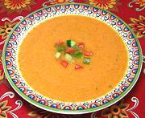

|
Gazpacho AndaluzSpain - Andalucia - Gazpacho Andaluz | ||||
| Makes: Effort: Sched: DoAhead: |
4-3/4 # ** 2-1/2 hr Most |
Salad in the form of soup - Gazpacho, has been made since Spain was part of the Roman Empire. It is defined as bread, garlic and olive oil. | |||
| Other ingredients are often added to Gazpacho, but without bread, garlic and olive oil, it is not Gazpacho, no matter what your favorite TV chef calls his concoction. This recipe is relatively modern, since the Romans did not have tomatoes or green peppers, but it is definitively Andalucian. | |||||
|
|
4 2 4 5 6 7 1 6 2 2 2 ----- |
oz # oz oz oz cl c T T t c --- |
Bread (1) Tomatoes, ripe Frying peppers (2) Cucumbers (3) Onion, sweet Garlic Olive Oil ExtV (4) Wine Vinegar, white Sherry Vinegar (5) Salt Water -- Garnish Tomatoes Green Pepper Cucumber Onion |
Make - (45 min plus chill time)
|